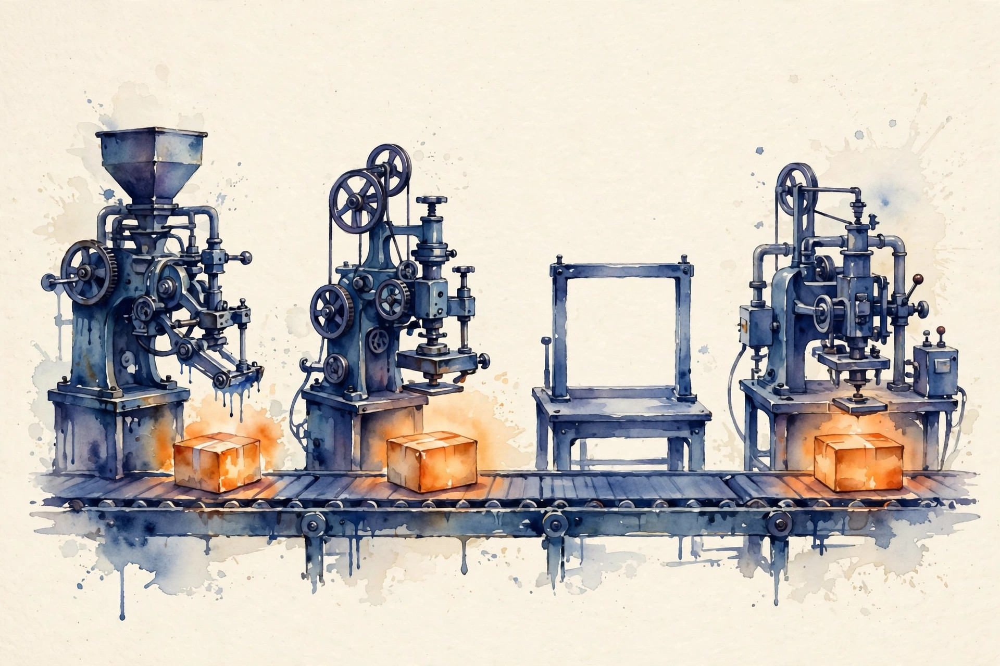
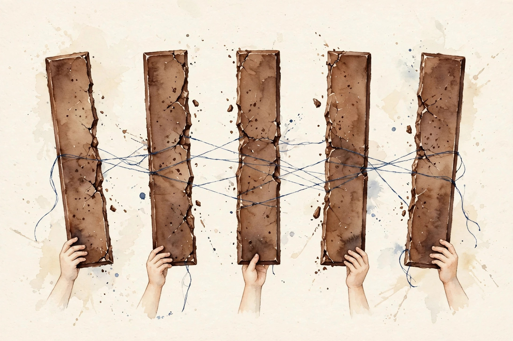
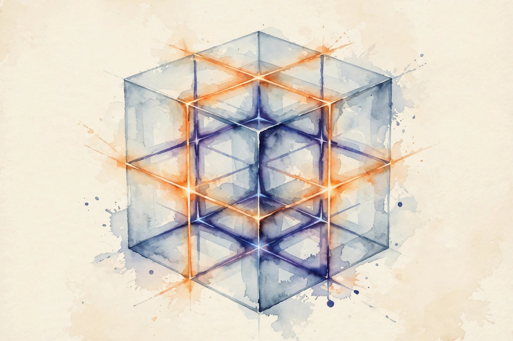

Companion · narrated from the lesson document
When the model itself must split, three axes divide it: tensor, pipeline, and data. This companion walks the hybrid unit: Megatron-style tensor splits, pipeline stages and their bubble, 1F1B schedules, the (tp, pp, dp) factorization, balance, checkpointing, inference parallelism, and the pre-flight invariants.
From the lesson The idea, and every number beside it, comes from the cited section of u09_model_parallel.md. The phrasing is the companion's.
Illustration Invented by the companion: an analogy, a toy with made-up values, or a what-if. Never lecture content.
companion Companion voice: the idea above the tag is from the lesson. The generalization below it is the companion's.
Provenance: no full lecture transcript exists for this session. The page narrates the lesson document content/v2/cs336/lessons/u09_model_parallel.md, not a video. Claim class: REQUESTED-BRANCH. Standing note: no cluster on the lesson's build box. Parallelism strategies are studied as layouts, time models, and numpy simulations. Every number carries the lesson section that reports it.

Section 1 · Remediation
From the lessonRemediation
Three ways to split a model: data (U08, split the batch), tensor (split each layer across GPUs), pipeline (split the layers across GPUs). Tensor parallelism (TP) splits matrix multiplies and all-reduces per layer: 67.1 MB per layer on the reference, from visuals/compute_u09.py (executed 2026-10-06). Pipeline parallelism (PP) assigns layer ranges and pays a bubble: 42.9 percent at p=4, m=4.
Each axis divides one dimension: TP splits layers, PP splits the layer stack, DP splits the batch. tp * pp * dp = N.
Section 2 · C01
From the lessonC01 §2, §3, §5
A single layer exceeds one GPU. How is it split? Split attention heads across ranks: each rank holds d/tp of QKV and the output projection's rows. Split the MLP column-wise then row-wise. Each needs one all-reduce per sublayer to sum partial outputs: 2 per layer. The mechanism: Y = XW with W split by columns means each rank computes Y_i = XW_i with no comm. The next layer's row-split needs the full Y, so all-reduce sums the partial products before it.
From the lessonC01 §6, §9
The lesson's run, executed 2026-10-06: TP all-reduce 67.1 MB per layer, 2.1 GB per 32-layer step. 2 all-reduces per layer per step, latency-sensitive, so TP stays within a node (fast links). The alternative: ZeRO-3 (U08) for memory without per-layer comm. TP fits layers that exceed one GPU, or inference latency.

TP=8 across slow links: the 2.1 GB per step at 200 GB/s is fine, but latency per all-reduce (64 per step) dominates small batches.
Section 3 · C02
From the lessonC02 §2, §3, §5, §6
32 layers, 4 GPUs: who holds what? Stage i holds layers [8i, 8i+8). Microbatches flow through: stage 0 processes microbatch 0, passes activations to stage 1, and so on. Communication is point-to-point (activations/grads), not collective. The pipeline fills in p-1 steps and drains in p-1 steps. Bubble fraction = (p-1)/(m+p-1). The lesson's run, executed 2026-10-06: 8 layers/GPU, bubble 42.9 percent at m=4, 8.6 percent at m=32.
From the lessonC02 §9, §10, §11
Costs: the bubble, plus point-to-point comm per microbatch per boundary. The alternative: TP (no bubble, more comm). PP fits deep models across nodes. The trap: m < p means the bubble exceeds 50 percent and most stages idle most of the time. The assumption "pipeline is efficient" breaks without enough microbatches. Keep m >> p.
Fewer microbatches than stages: the bubble passes 50 percent. Most stages idle most of the time.
Section 4 · C03, C04
From the lessonC03 §2, §3, §5, §6
How much throughput does the bubble cost? Bubble = (p-1)/(m+p-1). Three levers: more microbatches (m), fewer stages (p), better schedules (C04). Ideal time = m stage-times, actual = m+p-1. The lesson's run, executed 2026-10-06: (p=4, m=4) gives 42.9 percent, (p=8, m=8) gives 46.7 percent.
From the lessonC04 §2, §3, §5, §6
Can the bubble shrink without more microbatches? 1F1B (one forward, one backward): each stage alternates, keeping the pipeline full in steady state and limiting in-flight activations to about p microbatches. The bubble concentrates at the start/end: about (p-1)/m. Interleaved: each stage holds multiple layer chunks, shrinking the bubble further at the cost of more p2p comm. The lesson's run, executed 2026-10-06: 1F1B at p=4, m=32 gives about 9.4 percent bubble with about 4 microbatches of activation memory. GPipe is simpler with more memory. 1F1B is the standard.
visuals/compute_u09.py (executed 2026-10-06): (p=4, m=4) 42.9%, (p=8, m=8) 46.7%, (p=4, m=32) 8.6%, 1F1B at (p=4, m=32) about 9.4%.From the lessonC03 §5 Bubble toy. The lesson's formula: (p-1)/(m+p-1).
Stages p Microbatches m
Press the button.
At the defaults: 3/7 = 42.9%, matching C03 §6.
Doubling m to halve the bubble doubles activation memory and OOMs. And checkpointing inside the 1F1B steady state without accounting lets recompute compete with the overlapped schedule, so the bubble grows.
From the lessonC04 §9, §10, §11
Schedule complexity is the cost, interleaving adds comm. One qualifier: 1F1B with uneven stages lets the slow stage set the pace, and the bubble formula underestimates. The assumption "uniform stages" breaks. Balance first (C07).
Section 5 · C05, C06, C10
From the lessonC05 §2, §3, §5, §6
64 GPUs: what (tp, pp, dp)? The lesson's toy, executed 2026-10-06: (8, 2, 4), (4, 4, 4), (2, 8, 4) all cover 64. tp * pp * dp = N. Rules: TP innermost (fast links, per-layer comm), PP next (p2p across nodes ok), DP outermost (all-reduce grads, most tolerant). Memory per GPU divides by tp*pp (params) and dp (batch). Each axis divides one dimension: params by tp (and pp for layers), batch by dp, optimizer by dp with ZeRO.
From the lessonC06 §2, §3, §5
Which axis costs the most comm? TP: 2 all-reduces/layer (many small), 2.1 GB/step. PP: activations per microbatch per boundary (p2p). DP: grads once per step (one large). The pattern, not just bytes, decides the link requirement. TP: 2*L messages of B*T*d*bytes. PP: 2*m*(p-1) messages of microbatch activations. DP: 1 message of grad bytes (bucketed). The table drives placement (C05). The trap: counting bytes but not messages. TP's 64 small all-reduces hurt more than DP's one large one at equal bytes. The assumption "bytes are bytes" breaks. Latency matters.
From the lessonC10 §2, §3, §5, §6
With (tp=8, pp=2, dp=4), what does ZeRO shard over? Each axis shards its own dimension: TP shards layer params within the layer, PP shards layers, DP+ZeRO shards optimizer states and grads across the dp group. The lab: params 14/16 = 0.875 GB fp16 per GPU, optimizer states shard over dp=4: 56/4 = 14 GB/GPU. The trap: sharding optimizer over tp instead of dp makes the all-reduce groups mismatch, and updates are wrong. The assumption "any group shards" breaks. The shard group must match the reduction group.

From the lessonC12 §5 Pre-flight toy. Give a (tp, pp, dp) triple and N. The toy checks the lesson's five invariants.
tp pp dp N node size
Press the button.
Invariants: tp*pp*dp equals N. tp stays within node size. m far exceeds p (needs m, assumed checked). Shard group matches reduction group (by construction here).
tp spanning slow links: per-layer latency kills throughput.
Section 6 · C07
From the lessonC07 §2, §3, §5, §6
32 layers over 4 stages, but stage 0 also holds the embedding. The pipeline runs at the slowest stage's pace. The embedding, the LM head, and uneven layer costs unbalance a naive contiguous split. Fix: profile per-layer times and split by cost, not by count. Throughput = 1/max(stage times). Balance = max/mean, the goal is about 1.0. The lab: naive stage times 10/8/8/9 ms, a 25 percent slowdown, balance 1.14. Rebalanced to 8.75 each: 1.00.
Balancing by parameter count: attention and MLP have different FLOP/param ratios, so the "balanced" split is not.
Section 7 · C08
From the lessonC08 §2, §3, §5, §6
1F1B bounds in-flight activations, but each is still large. Checkpointing (rematerialization) stores only layer inputs and recomputes the rest in backward. In a pipeline it multiplies the affordable m: the bubble lever (C03) gets cheaper. Memory per microbatch drops from O(L) to O(sqrt(L)) with selective checkpointing. The freed memory funds more microbatches. The lab shows checkpointing cutting the per-microbatch activation memory by about sqrt at 33 percent more compute. CPU offload is slower. Checkpointing is the standard.
Section 8 · C09
From the lessonC09 §2, §3, §5
Serving a 70B model at low latency: TP or PP? Decode is memory-bound per token: TP splits the weight reads across GPUs, cutting per-token latency. PP keeps full weights per stage but adds stage-to-stage latency per token: good for throughput, bad for latency. Per-token time ≈ weight bytes / aggregate bandwidth under TP. Under PP it is the stage sum plus p2p hops. The lab compares TP=4 vs PP=4 on the reference with a toy latency model. TP for latency. PP for throughput-oriented serving.
PP=8 for a chatbot: each token pays 8 stage hops and the p99 latency misses the SLO.
Section 9 · C11
From the lessonC11 §2, §3, §5
The hybrid run is slow. Which axis is at fault? Three modes: (1) imbalance: one stage slow, all wait (signature: stage-time skew), (2) bubble: too few microbatches (signature: idle gaps at fill/drain), (3) wrong tier: TP across slow links (signature: comm-dominated step). Each mode has a distinct profile: skew vs gaps vs comm fraction. Diagnose from the profile, not from the config. The lab injects imbalance, bubble, and cross-node TP and shows each signature.
From the lessonC11 §11
"Fixing" a bubble by adding GPUs: more stages can worsen the bubble. The assumption "more hardware helps" breaks. The fix is m or schedule.
Section 10 · C12, synthesis
From the lessonC12 §2, §3, §5, §6
Before launching on 64 GPUs, what is verified? Five invariants: (1) tp*pp*dp = N, (2) tp <= node size, (3) per-GPU bytes < HBM, (4) m >> p, (5) the shard group matches the reduction group. Violations are caught on paper, not on the cluster. The lab: (8, 2, 4) on 64 passes all five, (16, 2, 2) fails invariant 2. Minutes, saves allocations. Trial runs are the expensive alternative. Invariants first.
All invariants pass but the run is slow: the invariants are necessary, not sufficient. Balance and overlap still need tuning.
From the lesson The arc, end to end. Data splits the batch, tensor splits the layer, pipeline splits the stack (remediation). Megatron-style TP splits heads and MLP columns with 2 all-reduces per layer: 67.1 MB per layer, 2.1 GB per 32-layer step (C01). PP assigns layer ranges and pays (p-1)/(m+p-1) idle (C02, C03). 1F1B and interleaving shrink the bubble (C04). The triple factors N with TP innermost (C05). Comm patterns decide link placement (C06). Stages balance by profiled time (C07). Checkpointing funds more microbatches (C08). Inference picks TP for latency, PP for throughput (C09). Hybrid shards params over tp*pp and optimizer over dp (C10). Three failure modes have three signatures (C11). Five invariants gate the launch (C12).
From the lesson Where the unit points next, in the lesson's own forward links: U08 supplies the data-parallel axis and ZeRO. U11 inherits the inference-parallelism choice, where TP serves latency. U07 fuses the kernels that run inside each stage.
Wisdom index
Each nugget states the idea in plain words, why it matters, and the transferable principle. Every one is anchored to its lesson section.